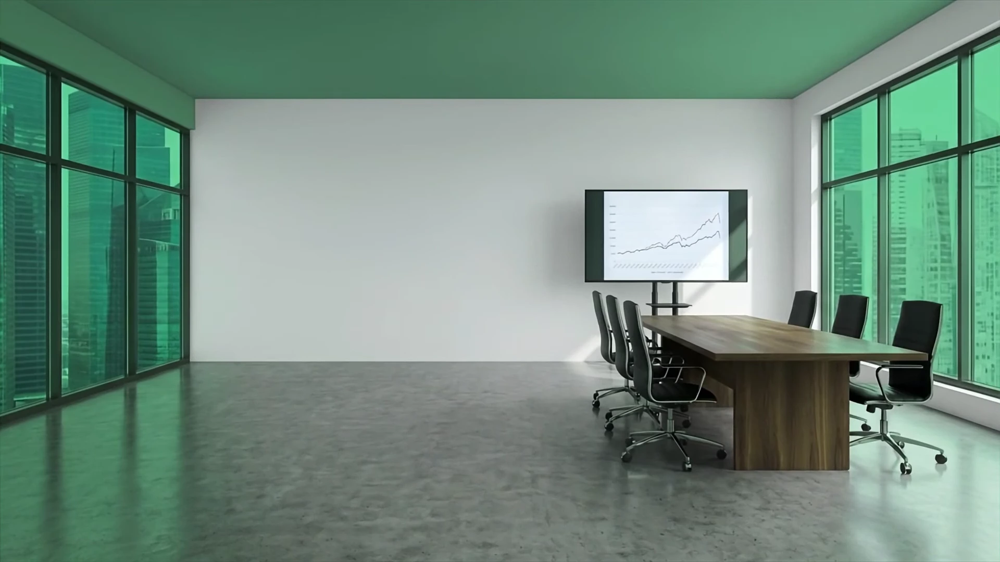
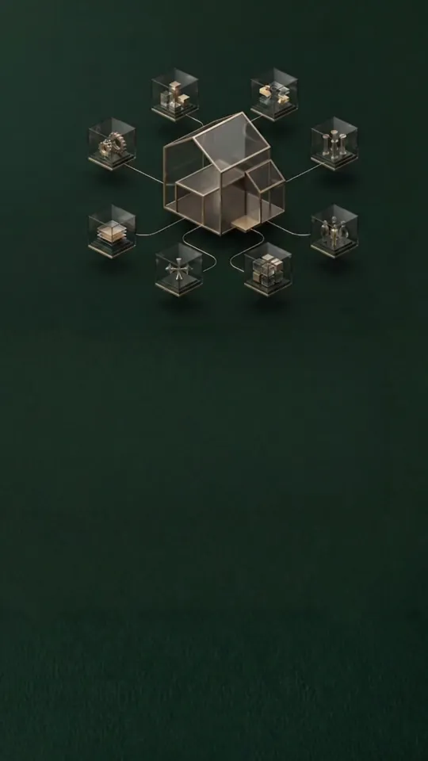
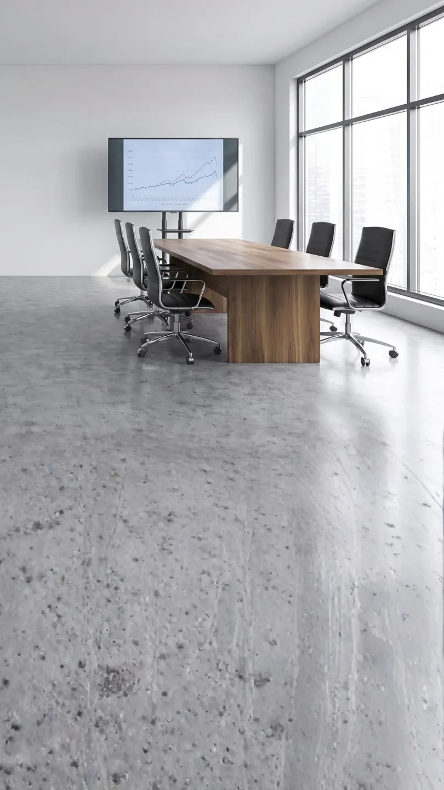
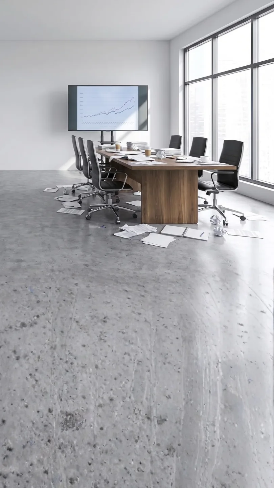
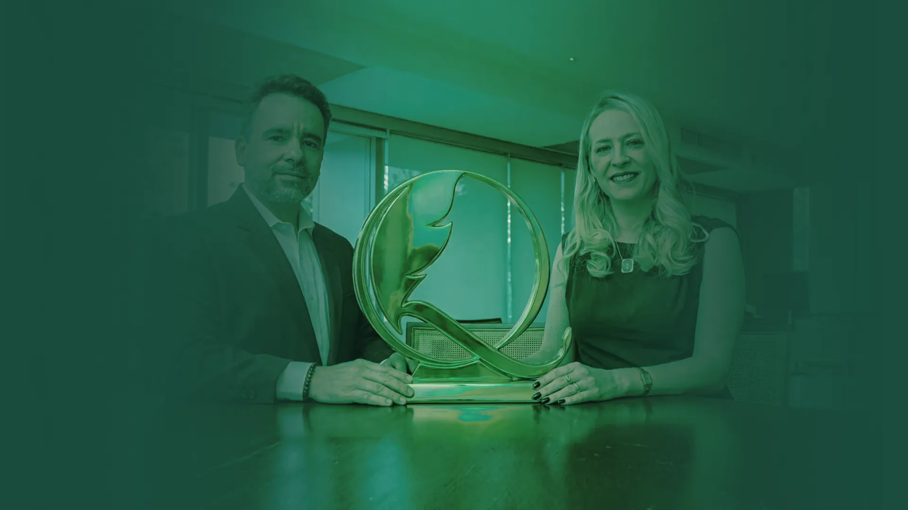
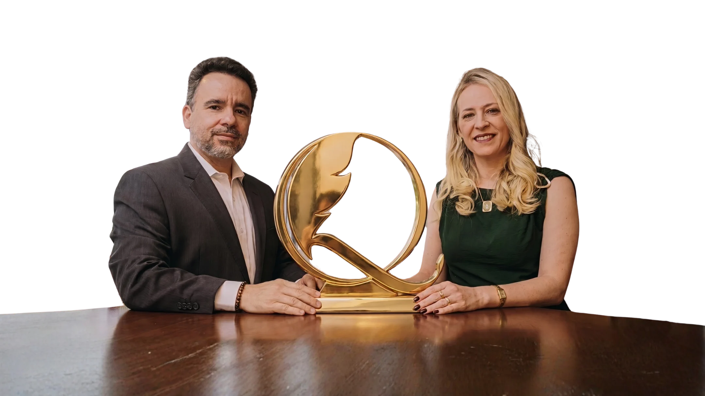

01
Só você sabe como funciona
Se você tirar férias, o que acontece?




Consultoria estratégica & governança empresarial
Estruturamos decisões, relações societárias, contratos e riscos jurídicos para que sua empresa cresça com mais organização, previsibilidade e segurança.
A maioria das PMEs chega a um ponto em que o crescimento torna-se o maior risco. Não por falta de clientes, por falta de estrutura para suportar o que veio.
A empresa vende, contrata e assume novas responsabilidades, mas continua dependente da presença do fundador para funcionar.
Enquanto o gráfico sobe, a falta de estrutura passa despercebida.
01
Se você tirar férias, o que acontece?
02
Baixado na internet, assinado na confiança. Funciona até o dia em que precisar usar.
03
Tudo combinado verbalmente, até a visão mudar.
04
Um processo pode acabar com o resultado do ano inteiro.
Quando percebe, a operação está um caos.
Mais comum do que parece
À medida que a operação se expande, aumentam os contratos, as relações, as decisões e os riscos. Sem uma estrutura correspondente, pequenas fragilidades passam a se acumular.
0%
das PMEs enfrentam dificuldades financeiras.
+0%
não possuem controles formais de caixa.
0%
encerram suas atividades antes de completar cinco anos.
Onde a Quezada entra
Atuamos de forma contínua nas questões jurídicas, reduzindo vulnerabilidades e oferecendo suporte antes, durante e, quando necessário, depois do conflito.
Mais segurança e previsibilidade para conduzir decisões importantes.
Organizamos papéis, responsabilidades, processos de decisão e relações entre sócios para que a empresa funcione com mais clareza e menos dependência.
Menos dependência do fundador para a empresa seguir decidindo.


Quem conduz
Cada projeto é conduzido a partir de duas dimensões que não podem ser separadas: a estrutura que organiza o negócio e as relações que sustentam essa estrutura.
Estratégia, governança e arquitetura jurídica
Atua ao lado de fundadores, sócios e lideranças na construção de empresas mais organizadas, protegidas e preparadas para crescer além da dependência de seus fundadores.
Com mais de 30 anos de experiência jurídica e empresarial, integra estratégia, governança corporativa e arquitetura jurídica para estruturar decisões, reduzir vulnerabilidades e fortalecer as relações que sustentam o negócio. Autor de Arquitetura da Ordem.
Conheça sua obraPessoas, cultura e alinhamento sistêmico
Conduz os processos de alinhamento entre sócios, líderes e familiares, atuando sobre conflitos e dinâmicas que a estrutura jurídica, sozinha, não consegue resolver.
É fundadora da Sociedade Brasileira de Direito Sistêmico, pioneira em implementar o tema no Brasil, foi presidente da Comissão de Direito Sistêmico da OAB/SP e acumula mais de 100 mil horas dedicadas à formação de profissionais.
Conheça sua obraComo a Quezada pode colaborar
Do suporte essencial ao acompanhamento estratégico completo, cada plano oferece diferentes níveis de proximidade, prevenção e suporte para atender sua real demanda.
Segurança para organizar as bases.
Para pequenas empresas e negócios que precisam reduzir riscos e contar com orientação jurídica nas decisões do dia a dia.
Inclui
Contencioso
Proteção contínua para empresas em crescimento.
Para operações que ganharam complexidade e precisam organizar contratos, relações trabalhistas e decisões entre os sócios.
Inclui
Contencioso
Um jurídico sênior próximo das decisões mais importantes.
Para grupos familiares, operações complexas e empresas em preparação para sucessão, investimento ou venda.
Inclui
Contencioso
Os planos incluem acompanhamento, análise e gestão dos processos conforme o nível contratado. A atuação judicial específica é avaliada de acordo com a natureza e a complexidade de cada demanda — quando contratada separadamente, o assinante conta com condições diferenciadas, prioridade de atendimento e honorários reduzidos.
Conheça nossos livros
Estrutura, liderança e maturidade para empresas crescerem além do fundador.
Mais de 30 anos de reestruturações empresariais complexas foram condensados em um método aplicável à realidade de empresas em crescimento.
Arquitetura da Ordem não é uma obra baseada apenas em conceitos acadêmicos. O livro nasce da prática, de decisões difíceis, conflitos societários, processos de expansão e desafios vividos ao lado de fundadores, sócios e lideranças. Contando a história real da trajetória de seu fundador e seu método de Simplificar, Organizar e Liderar.
Conheça nossos livros
Cases da Constelação Familiar Sistêmica — Volume II
Uma obra dedicada à compreensão das relações, dos vínculos e das dinâmicas que influenciam sistemas familiares, organizacionais e sociais.
A partir de casos práticos e reflexões conduzidas por diferentes especialistas, o livro apresenta como o Pensamento Sistêmico pode ampliar a percepção sobre conflitos, repetições de comportamento, dificuldades de comunicação e padrões que nem sempre são visíveis em uma análise convencional.
Onde nos encontrar
Localização
Av. Ipanema, 165 — Empresarial 18 do Forte, Barueri - SP — Sala 1114
Redes sociais
Instagram · @grupo.quezadaPrimeiro passo
Perguntas frequentes
Se a empresa tem sócios, funcionários ou contratos, já existem decisões, responsabilidades e riscos que precisam de clareza.
Governança não significa criar uma estrutura de multinacional. A Quezada implementa apenas o necessário para o tamanho e o momento atual da empresa, sem burocracia excessiva.
Grande parte da advocacia atua de forma reativa: o profissional é procurado quando o conflito, a cobrança ou o processo já começou.
A Quezada também atua quando o problema existe, mas seu principal diferencial está na antecipação. Acompanhamos contratos, decisões, relações societárias e riscos para organizar a empresa antes que pequenas fragilidades se transformem em crises.
É a diferença entre apagar o incêndio e preparar a estrutura para reduzir a exposição a ele.
Sim. O primeiro passo é o Diagnóstico Inicial, que identifica os principais riscos e prioridades da empresa.
A partir dele, pode ser recomendado um projeto específico, um plano de acompanhamento contínuo ou uma implementação em fases. Caso a empresa avance para um plano, o investimento do diagnóstico é abatido da primeira mensalidade.
Sim. A Quezada atende empresas de todo o Brasil de forma 100% online.
Reuniões, diagnósticos, análises e acompanhamentos são conduzidos por processos estruturados, mantendo proximidade e continuidade independentemente da localização da empresa.
O primeiro passo
Uma conversa objetiva para entender o momento da empresa e mapear as prioridades: o que é urgente e o que pode esperar.